← Minimal Pitstop guides
Tutorial: install Minimal on your own computer
You will install the whole Minimal stack on one machine with Docker, using a browser installer, and finish by signing in to a sample CRM that runs on it. Allow about fifteen minutes; the first start downloads the images.
The screenshots show a Mac. The screens are the same on Linux.
What you need
- Docker Engine 26 or later with the Compose plugin (
docker compose version), and ports 80 and 443 free on this machine.
- Your licence key file and its secret, and your slug, from https://license.littlebitlabs.com (self-service — sign in with Google or GitHub).
- This machine's public address added under Relay access in the licence portal, in the organisation that owns the key file. Without it the licence server refuses the install.
- You accept the Terms of Service, Privacy Policy and Consent Notice. The installer asks you to tick a box that says so.
Placeholders in this guide: <your-key-file>.json is the key file you downloaded and <your-secret> is its secret. Neither is ever typed into a command line here.
Get your licence (once)
The licence is self-service. Sign in at https://license.littlebitlabs.com with Continue with Google or Continue with GitHub — the portal has no passwords and reads only your name and email.
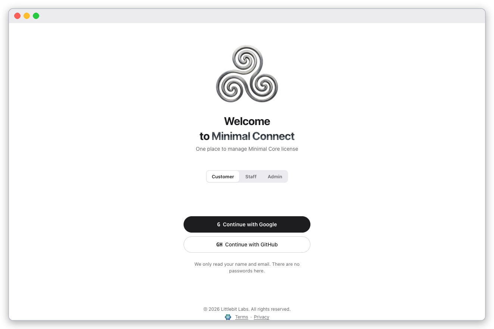
The sign-in page: the Customer tab, then Google or GitHub.
Once signed in, three pages matter. The screenshots mask the signed-in person and every address.
Account shows your Slug, marked Permanent. You type it into the installer.
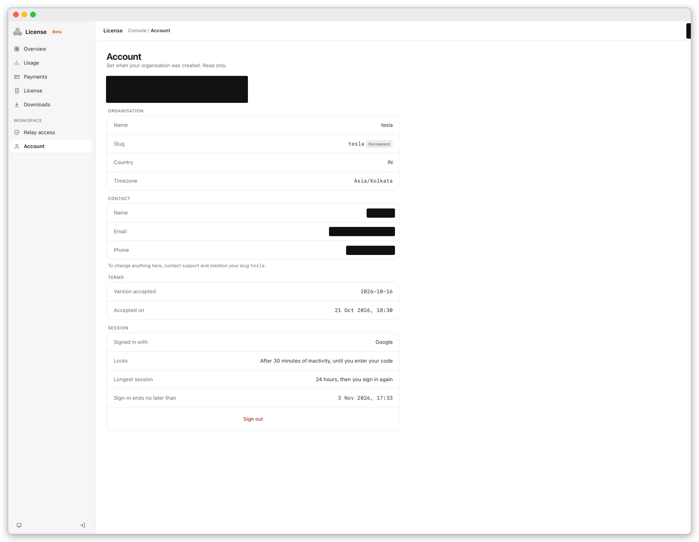
The Account page. The organisation's slug is permanent; to change anything else, contact support and mention it.
License shows the licence's product, dates and status. Press Download license file to get minimal-license-<slug>.json. The License secret is shown once, when you download the file, and never again; Replace secret issues a new one if you lose it. The file stays valid.
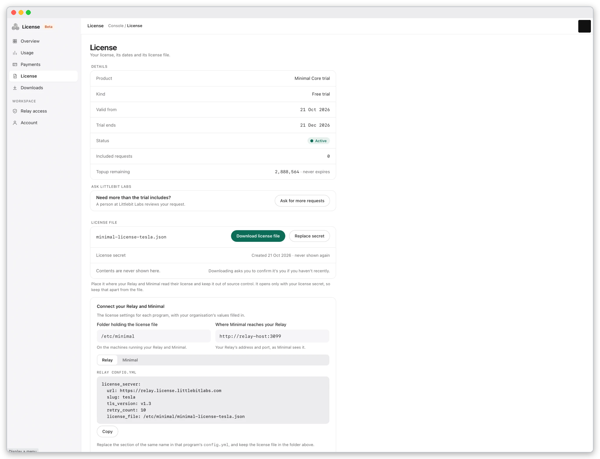
The License page with the Download license file and Replace secret buttons.
Relay access lists the addresses your installation may connect from. Any other address is refused. Add this machine's public address here before you install. Add this address fills in the public address of the browser you are using; that is the machine's address only when the browser and the stack leave through the same address. Otherwise type the address, or a range, under Address or range, give it a Label and press Add address. A refused attempt appears under Refused addresses with an Add button.
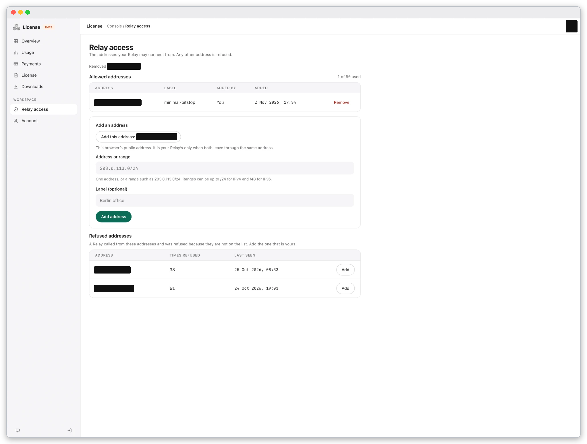
The Relay access page. You can list up to 50 addresses.
Keep the key file and its secret apart: the file opens only with the secret.
1. Fetch the compose file and start the installer
Make a folder under your home directory and run every docker compose command from it.
mkdir pitstop && cd pitstop && mkdir licence
curl -fsSL --proto '=https' --proto-redir '=https' -o docker-compose.yml \
https://artifacts.littlebitlabs.com/api/packages/littlebitlabs/generic/compose/0.3.6/docker-compose-v0.3.6.yml
docker compose up wizard
The installer prints a one-time address that looks like http://localhost:8070/?token=…. Open it in a browser on this machine. The address is valid for this run of the installer only.
flowchart LR
A[compose file] --> B[docker compose up wizard]
B --> C[installer page in your browser]
C --> D[licence + choices]
D --> E[stack starts: databases, identity, Core, gateway]
E --> F[Ready screen]
From the compose file to the Ready screen.
2. Choose where it runs
The first page is Hello. It lists what you get after the install: sign-in and a console to manage users and roles, a REST API over every table, permissions enforced on every call, optional Google or GitHub sign-in (Hosted and LAN), and a sample workspace app with API collections for Postman, Bruno, Insomnia and OpenAPI. Before you start lists the three things every mode needs: Docker running on this machine, your licence, and this machine's public address added under Relay access. Press Continue; the next step checks Docker first.

The installer's first page, Hello.
Under Where will this run? choose Local, then Continue. Local means this computer only; the stack answers at addresses like http://api.localhost.
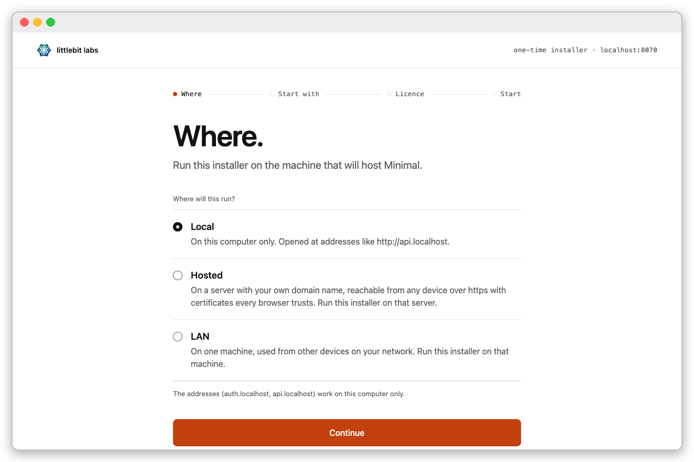
Local selected on the Where screen.
Start with. lists ten datasets. Pick one to look at while you learn Minimal; it is loaded into your own database at the first start. Beside the list the page describes the one you have selected: its area, its tables, and Who sees what.

The ten datasets (the number beside each is its table count): Acme, CRM, Helpdesk, Events, Inventory, Expenses, Observability, Education, Clinic and Starter. Acme is selected first.
Select CRM. The panel says Customers & pipeline · 8 tables, lists the tables, and explains the access classes: each table has its own, a viewer is refused 1 of the 8, and editors and admins read them all and can add and change rows in 6. Then press Continue.
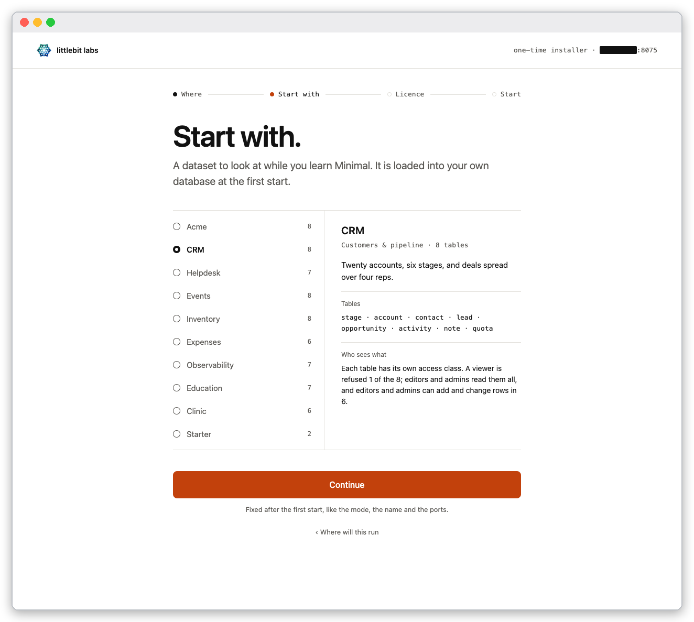
The CRM dataset: twenty accounts, six stages, and deals spread over four reps.
The dataset is fixed at the first start, like the mode, the name and the ports. Changing it later means docker compose down -v, which erases data.
3. Give it your licence
On Your licence. choose your key file, paste the File secret, and type your Slug. The page shows this machine's public address (masked in the screenshot) so you can add it under Relay access.
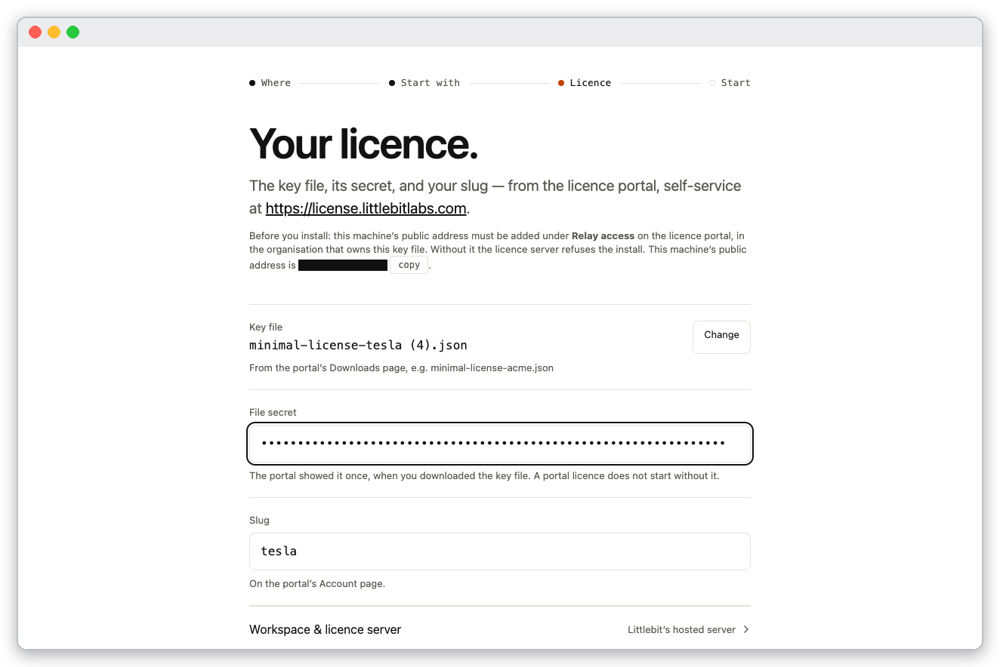
The licence screen with a key file chosen. The secret shows as dots.
Press Continue. On the review screen tick the Relay access box and the box that begins I agree to the Terms of Service. Prepare my Minimal stays off until both are ticked.
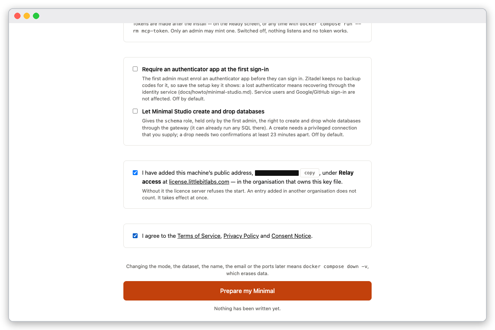
Both boxes ticked; the button is on.
Press Prepare my Minimal. The page narrates eight stages: Fetching the images, Securing your keys, Preparing your databases, Starting identity, Checking your licence, Loading the sample, Starting the front door and Checking the front door is reachable.
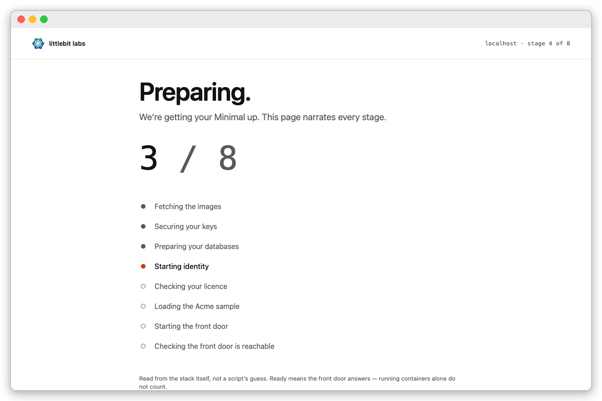
Stage four of eight: the page counts the stages and marks the current one.
When the last stage passes, the page says Ready.
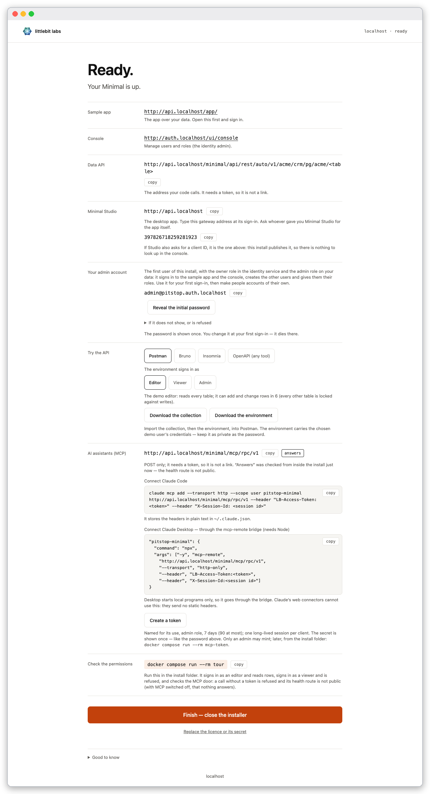
The Ready screen lists every address, your admin account, API collections and the MCP address.
4. Check the containers
In your folder:
docker compose ps
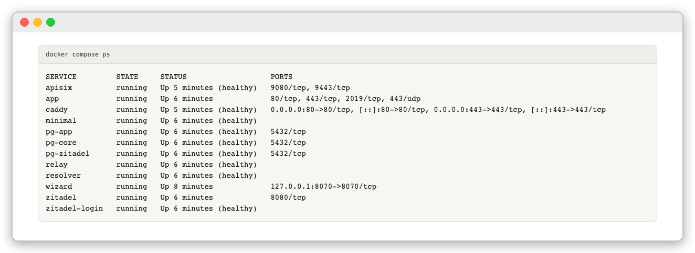
Twelve services running. The installer container stays until you press Finish — close the installer on the Ready screen.
Services with a health check show (healthy). app and zitadel have none by design.
5. Sign in
The first user is the admin: admin@pitstop.auth.localhost. Its initial password is shown once by Reveal the initial password on the Ready screen. To read it later, from your folder:
docker compose run --rm -T admin-password
Open the console address from the Ready screen, http://auth.localhost/ui/console, and type the login name.
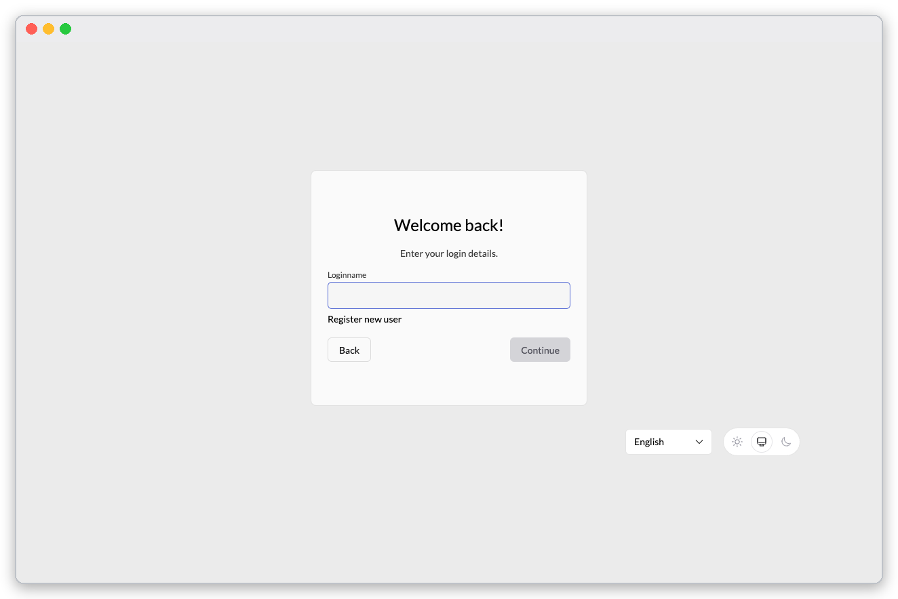
The login-name page.
Type the initial password.
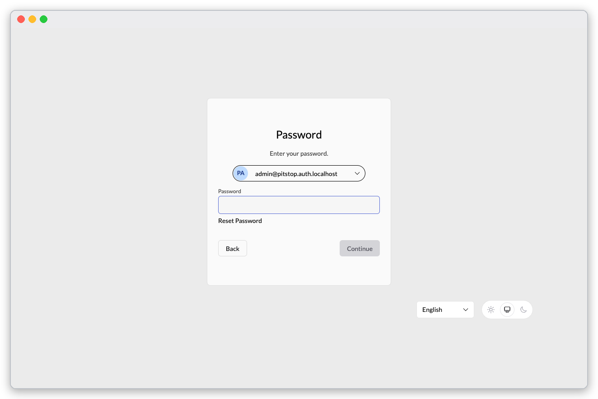
The password page; the password is masked in the screenshot.
The first sign-in forces a new password: at least 8 characters with a symbol, a number, an uppercase and a lowercase letter. The page ticks each rule as you meet it.
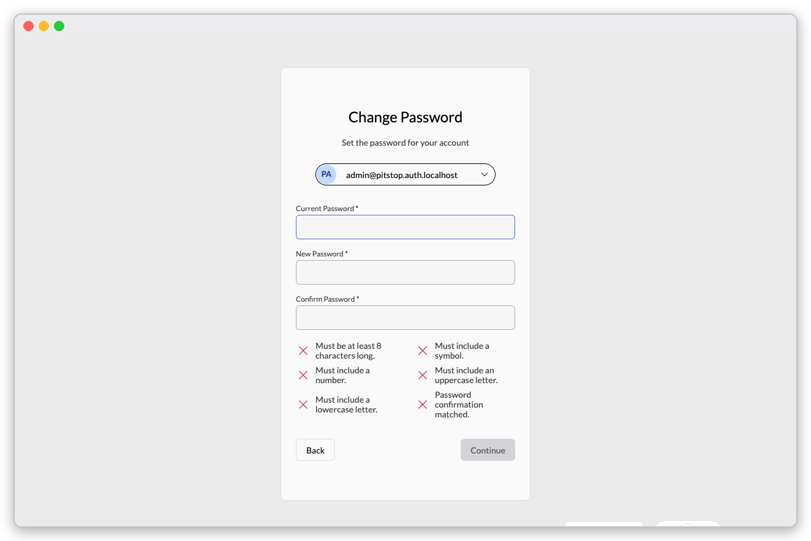
The change-password page with no rule met yet.
After the change the identity console opens.
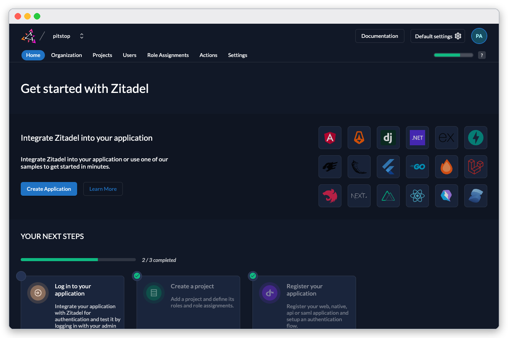
The identity console, where you manage users and roles.
Open the sample app at http://api.localhost/app/ and press Sign in. You land on the pipeline of the CRM dataset.

The sample app, signed in as the admin: forty deals in six stages.
Check yourself
docker compose ps lists caddy, minimal, resolver and relay as running (healthy).http://api.localhost/app/ shows Pipeline. with 40 deals after you sign in.- Signing in again with the initial password is refused; the new one works.
- The installer is still running until you press Finish — close the installer.
Next